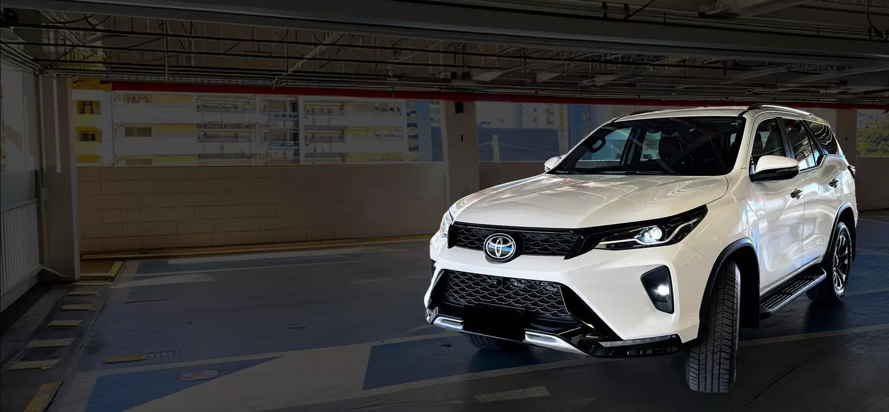
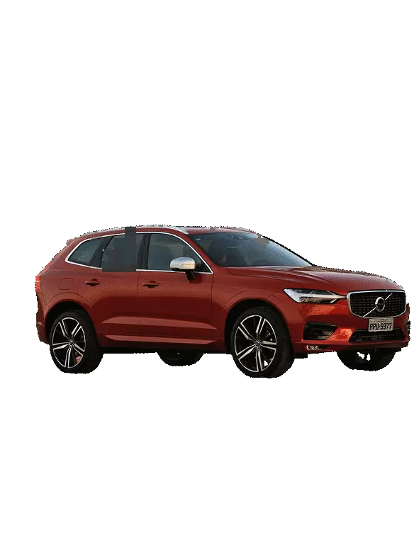
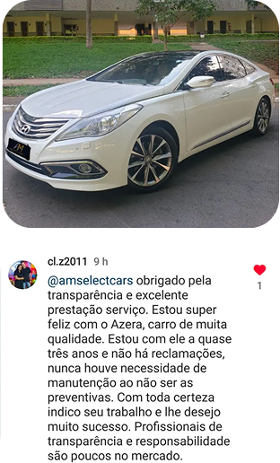
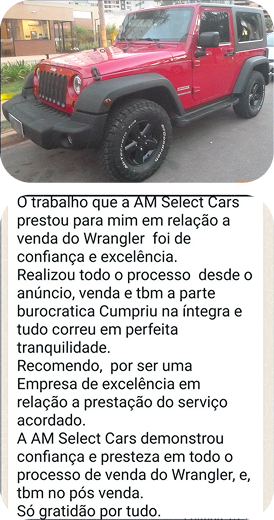
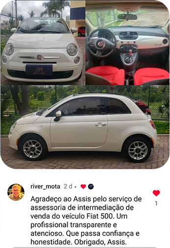

Seu tempo
preservado
Sem responder a curiosos nem mostrar o carro a estranhos. Você segue focado no que importa: saúde, família e trabalho.

A AM Select Cars é a assessoria especializada para cuidar de todo o processo de venda de seu veículo premium. Do início ao fim, com discrição e segurança.
Dedique atenção ao que realmente importa na vida: saúde, família e trabalho.
Suas únicas "preocupações": receber o dinheiro da venda na conta e transferir o veículo.A parte chata do processo é com a gente.
Responder curiosos o dia inteiro emostrar o carro para estranhos.
Interessados que só querem"dar uma olhada" e somem.
Proposta de troca em loja bemabaixo do que o carro vale.
Semanas com o anúncio parado,enquanto o carro desvaloriza.
E o pior: o risco na hora de fechar golpe,comprador enrolado, "pode confiar".
Vender um carro de alto valor por conta própria não é economia. É comprometer tempo, energia, dinheiro e segurança, sem necessidade.
E como resultado, entregamos segurança, economia de tempo, de energia e de dinheiro.
Sem responder a curiosos nem mostrar o carro a estranhos. Você segue focado no que importa: saúde, família e trabalho.
Filtramos compradores, conduzimos as tratativas e eliminamos o risco de golpes. Você não precisa lidar com desconhecidos.
Na troca direta com lojas, o valor costuma ficar bem abaixo do mercado. Com a intermediação, a venda é feita ao comprador final.
Precificação estratégica, fotos e vídeos profissionais e anúncios nas principais plataformas, com destaque para Webmotors, OLX e Mercado Livre.
Você não abre mão do carro enquanto ele está à venda. Siga usando normalmente até que o negócio seja concluído.
Análise do estado de conservação, comparativos de mercado e definição do valor justo.
Cuidados estéticos para deixar o carro ainda mais atrativo antes de ir ao mercado.
Fotos, vídeos e anúncios profissionais nas principais plataformas.
Triagem de interessados qualificados. Curiosos e golpistas não chegam até você.
Condução do fechamento com segurança, suporte na burocracia, documentação e logística.



Trabalhamos com marcas premium e também com outras marcas de alto padrão, contanto que o veículo tenha procedência.
Histórico comprovado de manutenções, baixa quilometragem, sem passagem por leilão, sinistro ou bloqueio judicial.
Comissão de 4% sobre o valor de venda. No fechamento do contrato é cobrado um adiantamento para preparação estética, captação de fotos e vídeos e postagem de anúncios. A consulta inicial e a avaliação são gratuitas.
Com você. Você continua usando seu veículo normalmente. Quem lida com interessados, conduz visitas e negocia é a AM Select Cars.
A AM Select Cars filtra compradores e conduz todas as tratativas, eliminando o risco de golpe. Suas tarefas no fim são receber o valor da venda e assinar a transferência.
A AM Select Cars oferece suporte em todas as etapas do processo de venda, do início ao fim.
Veículos premium, esportivos, exclusivos e modelos de alto padrão das marcas mais populares, sempre com procedência e histórico comprovado.
Sim. A quilometragem é analisada junto com estado de conservação, histórico de manutenção, procedência e momento de mercado para definir a melhor estratégia de venda.